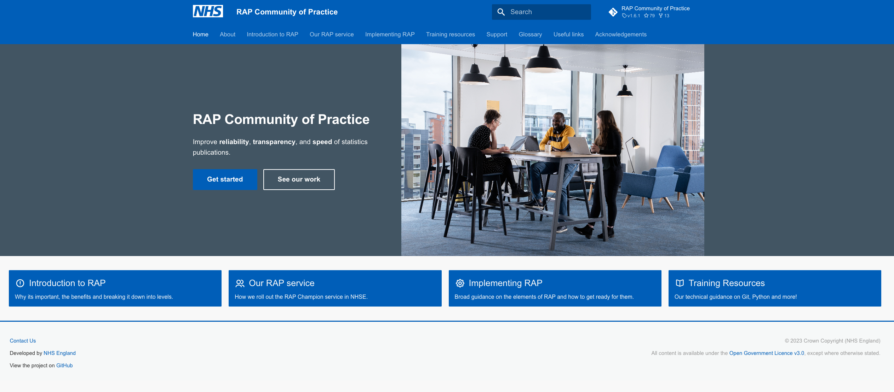

NHS Reproducible Analytical Pipelines (RAP) Champion Squad
| "Our roving squad of RAP champions have helped a number of teams not only transform their pipelines, but also tought them how to train others and produced guidance which is used by many other organisations."

Our Squad of RAP Champions has supported the rollout of RAP across the Analytics area within NHE England. This has involved taking existing guidance on RAP found elsewhere, and interpreting it in the local context of NHSE, making guidance specific to our systems and the problems faced by our analysts. We also put together a program for how to learn RAP, transform pipelines (through the "thin slice approach") and become a RAP champion yourself.
Results
In the past two years we've helped start up two other squads of RAP champions within NHS England, and greatly increased the number of publications with published code (it was zero, and now is everything here: NHSDigital/data-analytics-services#rap-publication-repositories). The teams who have implemented RAP have found their code is easier to understand, reuse, and often a lot faster, with one pipeline going from taking two analysts 2 weeks, to running in just 40 minutes.
We also got through to the finals of HSJ Digital Awards - Replicating Digital Best Practice Award.
Our guidance is widely used by other organisations within the sector, and we've had great success rolling out RAP within NHSE.
| Output | Link |
|---|---|
| NHS RAP Community of Practice Website | Website |
| NHS Digital Data Services - Analytics Service Repo | Github Repo |